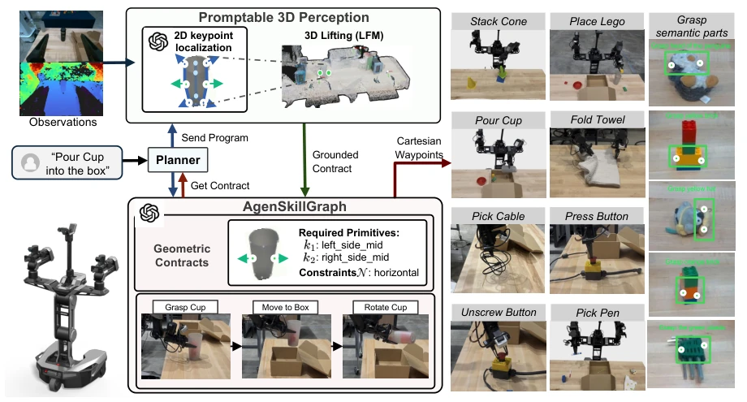
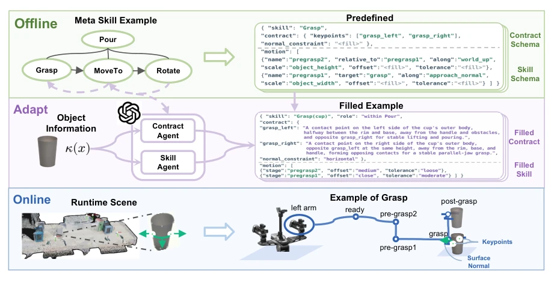
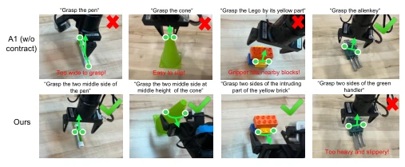
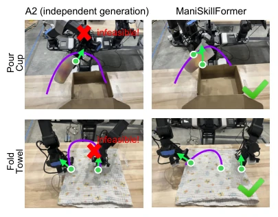
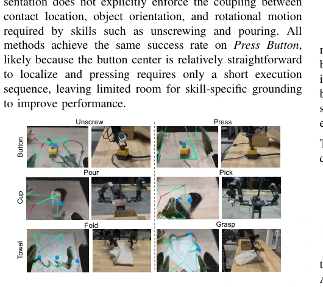
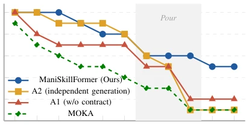

ManiSkillFormer implements a "contract-based" robot manipulation scheme, which is quite interesting. It does not rely on end-to-end black boxes, but uses geometric contracts to link perception and actions. LLMs are responsible for filling contracts, perception for finding points, and the skill library for acting. The advantage is strong generalization, without needing to retrain for every item. The disadvantage is that the skill library must be predefined; it fails when encountering unseen actions, and LLM inference costs are not low. Although claimed to be demonstration-free, the offline stage still relies on experts defining schemas, so it counts as "semi-demonstration-free". However, the performance on long-horizon tasks is indeed stable and more reliable than pure VLA. It attempts to use semantic constraints to solve the ambiguity of the perception-action interface, achieving higher survival rates on long-horizon tasks, but flexibility is limited, representing a typical case of "dancing with shackles".
Existing VLA models [1][2][3], although covering broadly, are data-hungry and hard to interpret, and perception, reasoning, and control are entangled, making failure tracing difficult. Hierarchical methods [4][5][6][7] decouple modules but lack efficient universal communication interfaces. Humans teach robots using semantics ("grab cup body") rather than coordinates, suggesting natural decomposition: skill requirements should be expressed in semantic space, with numerical values instantiated only during execution. This paper aims to solve this interface problem, letting skills explicitly tell perception what geometric information is needed, avoiding black-box decisions, and achieving interpretable general manipulation.

Fig. 1: ManiSkillFormer online stage overview. Given a language instruction, the Planner maps the task to structured skill- object pairs and retrieves the corresponding geometric contracts from AgenSkillGraph. A promptable 3D perception module then grounds the requested semantic 3D primitives from calibrated multi-view observations. The grounded execution packet parameterizes agent-generated motion templates in the SkillGraph to generate Cartesian waypoints. Right side: representative demonstration-free manipulation across different task types.
方法Method
系统分三阶段。离线阶段人类专家定义技能 Schema 和合同模板。半在线阶段，LLM 代理根据具体物体和任务上下文，生成几何合同（包含关键点语义描述和法向约束）及运动模板。在线阶段，Planner 解析指令为技能序列，Promptable 3D 感知模块根据合同从多视角观测中提取 3D 关键点，结合 LFM 模型提升精度并检查法向约束。AgenSkillGraph 存储技能，Controller 实例化模板生成笛卡尔轨迹。合同确保感知找对点，模板确保动作对路，实现语义到数值的转换。
The system is divided into three stages. In the offline stage, human experts define skill Schemas and contract templates. In the semi-online stage, LLM agents generate geometric contracts (including key point semantic descriptions and normal constraints) and motion templates based on specific objects and task contexts. In the online stage, the Planner parses instructions into skill sequences, the Promptable 3D perception module extracts 3D key points from multi-view observations based on contracts, combines with the LFM model to improve accuracy and check normal constraints. AgenSkillGraph stores skills, the Controller instantiates templates to generate Cartesian trajectories. Contracts ensure perception finds the correct points, templates ensure actions take the correct path, achieving semantic-to-numerical conversion.

Fig. 2: Overview of the Agentic SkillGraph pipeline. Offline, human experts define reusable skill structurs and contract schemas. During adaptation, two LLM agents tailor these schemas to each semantic skill–object pair and its task context, generating geometric contracts and semantic motion templates. Online, the perception module grounds the requested geometry in the observed scene, which parameterizes the motion templates for robot execution. Green denotes human-defined fields, and purple denotes agent-generated fields.
Tested on Galaxea R1-Lite. Three task sets: 8-class object grasping, functional manipulation (twist, pour, press), long-horizon tasks. Compared with MOKA, π0, and ablations (no contract, independent generation). Results: grasping success rate 88.24%, functional manipulation 75%. Higher survival rate in long-horizon tasks. Ablation proves contract effectiveness (A1 without contract is much worse), especially in long-horizon dependency scenarios. A2 independent generation is inferior to this paper on functional tasks, indicating geometric compatibility between skills is important.

Fig. 3: Comparison of A1 (no contract) and ManiSkillFormer

Fig. 5: Comparison of A2 pipeline and ManiSkillFormer.

Fig. 4: Skill-dependent geometric primitives for the same object. Left Column is the 3D GLB visualization from the 3D perception module; Right Column demonstrates the real skill execution performed by AgenSkillGraph. Even for same object, different skills require different semantic keypoints.

Fig. 6: Average survival rate over a 11-step long-horizon task C (“Pick yellow lego and blue lego into cup, pick red lego into red bowl, pour cup into the box, pick red bowl and place into box”). Each step corresponds to a skill. ManiSkillFormer with geometric contracts maintains higher survival rates and slows the accumulation of execution errors. C. LLM Token Usage